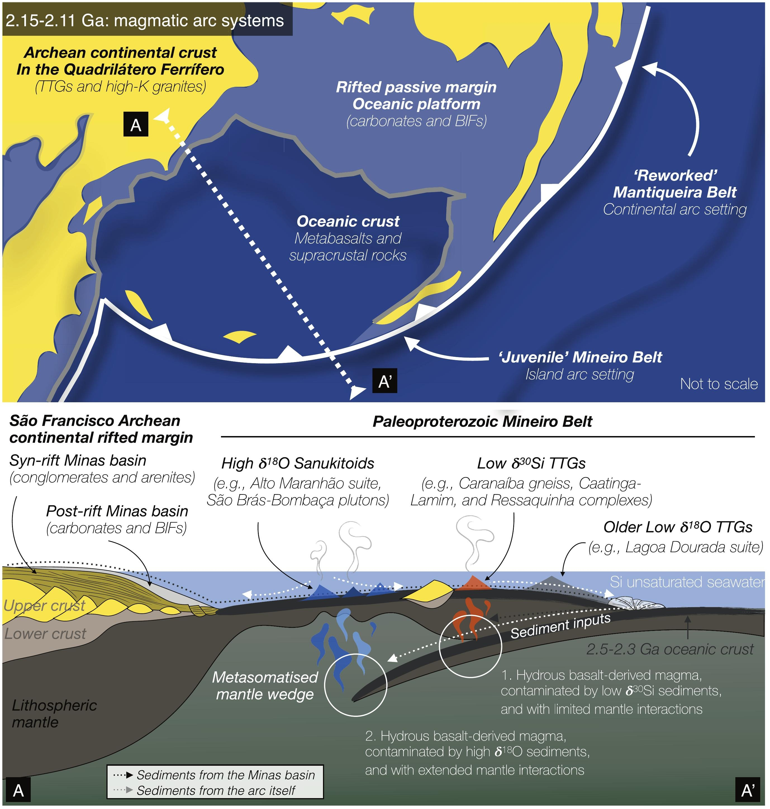

Hafnium and silicon isotope evidence for multiple unsilificed basaltic sources at the origin of Rhyacian TTG magmas in the Mineiro Belt (Brazil)

Resumo em Português
Rochas plutônicas ricas em sílica do tipo TTG (Tonalito-Trondhjemito-Granodiorito) correspondem às litologias dominantes dos embasamentos arqueanos. A compreensão de sua formação é essencial para desvendar o regime tectônico da Terra primitiva e delimitar a formação e evolução da crosta continental. Os TTGs arqueanos comumente exibem composições isotópicas de silício pesado, atribuídas à presença de sílica de origem oceânica em suas fontes, indicando interação com a superfície. O registro sedimentar demonstra que a sílica dissolvida na água do mar (DSi) diminuiu secularmente desde o Arqueano. Apesar do desaparecimento geral dos TTGs após o Arqueano, alguns granitoides de afinidade TTG ainda podem ser encontrados em domínios crustais Paleoproterozoicos tectonicamente bem delimitados. A comparação das características geoquímicas de TTGs arqueanos e proterozóicos, bem como de suas fontes, revela-se importante para alimentar os debates sobre a evolução da crosta continental e os contextos tectônicos.Para lançar nova luz sobre essas questões, o presente estudo examina o registro magmático de três unidades TTG Paleoproterozoicas no Cinturão Mineiro (Brasil), com foco em petrografia e geoquímica de rocha total, geocronologia U-Pb em zircão e geoquímica elemental e isotópica (Hf e Si). Os novos dados indicam formação episódica de magmas TTG durante o Riaciano (2,15–2,10 Ga), impulsionada principalmente pela fusão de fontes máficas de baixo-K enriquecidas em Rb e Ba, com tempos de residência crustal variáveis (~0,2–0,8 Ga). Os TTGs Paleoproterozoicos estudados exibem assinaturas isotópicas de silício mais baixas do que seus equivalentes arqueanos. Essa diferença está provavelmente relacionada a variações nas histórias pré-fusão das fontes, como ausência de silicificação hidrotermal, assinatura isotópica de Si distinta da água do mar no Paleoproterozoico, ou mecanismos de enriquecimento em Si diferentes dos observados nas fontes de TTGs arqueanos. Finalmente, uma influência limitada, porém detectável, de crosta pré-existente é visível nesses magmas por meio de herança em zircão, o que também pode explicar algumas das baixas assinaturas isotópicas de Si observadas. O estudo fornece ainda uma explicação alternativa para a aparente homogeneização das assinaturas isotópicas de Si na crosta continental superior ao longo do tempo, uma vez que TTGs Proterozóicos podem exibir assinaturas isotópicas de Si relativamente baixas em comparação com seus equivalentes arqueanos.